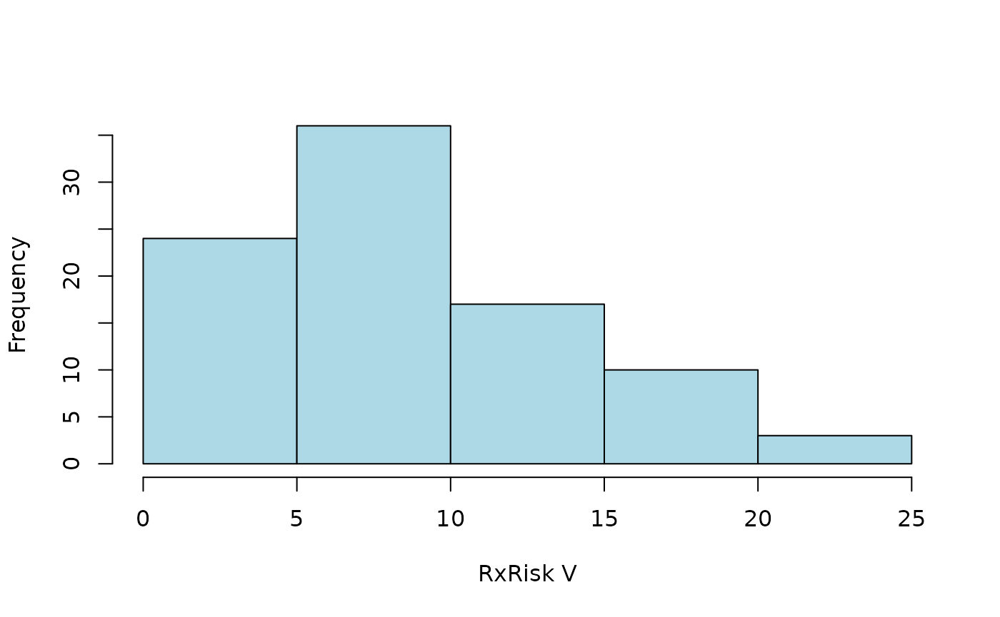
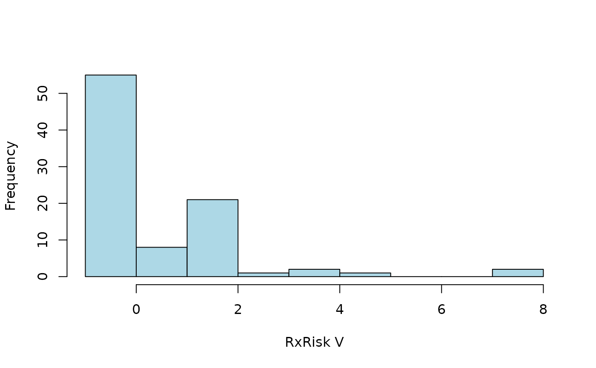
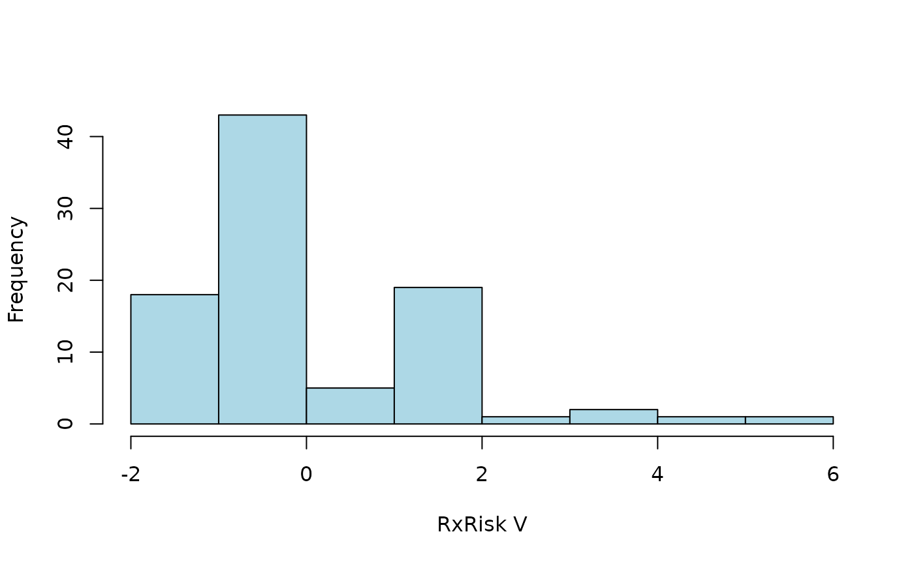
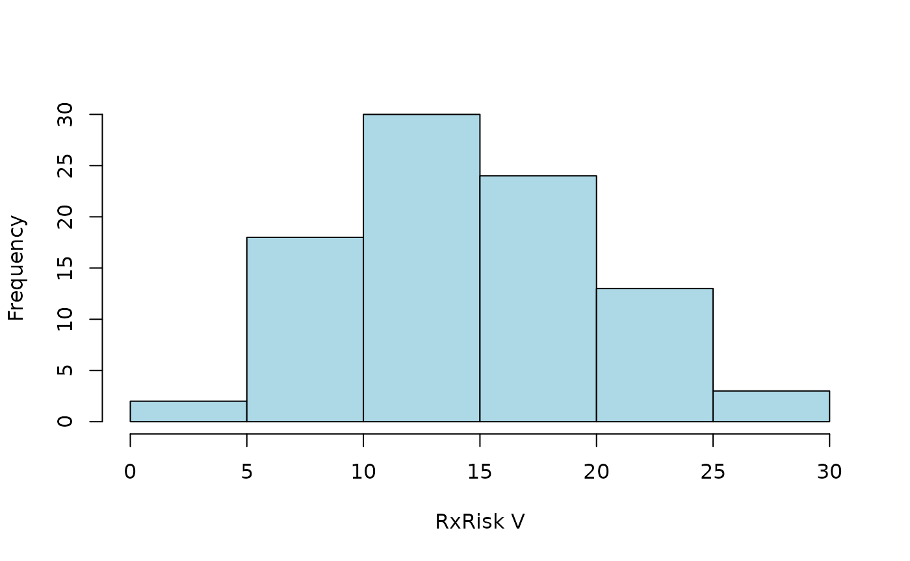

The coder package simplifies unit classification based on external code data. this is a generic aim that might be hard to grasp without further concretization. In this vignette, I will first explain the overall design principles, and then exemplify the concept with a typical use case involving patients with total hip arthroplasty (THA) and their pre-surgery comorbidity. Note, however, that the package is not limited to patient data or medical settings.
Triad of objects
Functions of the package relies on a triad of objects:
- Case data with unit id:s and possible dates of interest
- External code data for corresponding units in (1) and with optional dates of interest and
- A classification scheme (‘classcodes’ object) with regular expressions to identify and categorize relevant codes from (2).
It is easy to introduce new classification schemes (‘classcodes’ objects) or to use default schemes included in the package (see vignette("classcodes")).
Triad of functions
There are three important functions to control the intended work flow of the package:
-
codify()will merge object (1) and (2) for a coded data set of the intended format. If optional dates are specified, those will be used to construct time windows in order to filter out only the important dates (i.e. comorbidity during one year before surgery or adverse events 90 days after). -
classify()will then use the coded data and classify it using theclasscodesobject (3) (i.e. to code comorbidity data by the Charlson or Elixhauser comorbidity classifications). -
index()is a third optional step to summarize the individualclasscodescategories to a (possibly weighted) index sum for each coded item (i.e. to calculate the Charlson comorbidity index for each patient).
Those steps could be performed explicitly as codify() %>% classify() %>% index() or implicitly by the main function categorize() combining all steps automatically.
Use case
A typical use case of the coder package would consider patient data and comorbidity as described in the package readme.
The concept of comorbidity is often attributed to Feinstein (1970):
[T]he term co-morbidity will refer to any distinct additional clinical entity that has existed or that may occur during the clinical course of a patient who has the index disease under study.
Let’s consider a group of patients with THA, as identified from a national quality register, which might be large in size. Assume we are interested in those patients’ pre-surgery comorbidity, which is not captured by the quality register itself. Instead, this data might be codified in a secondary source, such as a national patient register containing all hospital visits and admissions during several years, both before and after the THA-surgery. Each hospital visit/admission might be recorded with one or several medical codes, for example using the International classification of diseases version 10 (ICD-10). Similarly, a medical prescription register might hold records of prescribed drugs with their corresponding codes from the Anatomic therapeutic chemical classification (ATC) system.
Thus, combining the primary and secondary data sets (objects 1-2 above) using some unique patient id, and a possible time window (i.e. to only consider comorbidity as recorded during one year before the THA), is a first step to identify patient comorbidity. This step is performed by the codify() function in step (i) above.
We have now gathered all the relevant codes for each patient. Common classifications (i.e. ICD-10 and ATC) are wast, however, including tens of thousands of medical/chemical codes, which are cumbersome and impractical to use directly. It is therefore common to categorize such codes into broader categories (i.e. by the Charlson, Elixhauser or RxRisk V classifications as below). Such classification could be a simple code matching problem using a look-up table. This is generally a slow, cumbersome and error-prone process, however. I therefore recommend to use regular expression for a compact code representation, as well as a computationally faster procedure. This is implemented in the classify() function from step (ii) above.
We have now reduced the data from tens of thousands of codes to perhaps 10-50 combined categories. This might be sufficient in some cases, although further simplifications might also be needed. It is thus common to simplify comorbidity into a single number, an index score, as the sum of individual comorbidities, possible weighted to differentiate more serious conditions from more trivial. Different weights might be of relevance under different circumstances or in different fields. This is implemented by the index() function in step (iii) above.
Charlson and Elixhauser
The Charlson (1987) and Elixhauser (1998) comorbidity indices are two examples used in medical research. Each index consist of several medical conditions, possibly summarized by a (weighted) index. Each condition is defined by a set of medical codes (Quan et al. 2005). Different versions of the International Classification of Diseases (ICD) codes are often used.
The coder package provides substantial functionality for both Charlson and Elixhauser, although we will not focus on those indices here (but see examples in vignette("classcodes")). Several other R packages have functions for Charlson and Elixhauser:
icd and comorbidity are both good packages well suited for their purpose based on effective implementations. medicalrisk can be used with ICD-9-CM codes but is not up-to-date with the latest version of ICD-10. comorbidities.icd10 and icdcoder are not actively developed or maintained.
One advantage with the coder package is the great flexibility for combining different sets of codes (ICD-8, ICD-9, ICD-9-CM and ICD-10 et cetera), with different weighted indices.
Risk Rx V
Another advantage of the coder package is the inclusion of additional classifications (see ?all_classcodes()), such as the pharmacy-based case-mix instrument Rx Risk V (Sloan et al. 2003). We will use this classification in an example. This classification, in contrast to Charlson and Elixhauser, relies on medical prescription data codified by the Anatomic Therapeutic Chemical classification system (ATC).
As for all classcodes objects in the package, additional information and references are found in the object documentation (?rxriskv).
Concrete example
Let us consider the hypothetical setting above using some example data (ex_peopple and ex_atc) as described in vignette("ex_data").
Default categorization
A first attempt to calculate the Rx Risk V score for each patient:
default <- categorize(
ex_people, codedata = ex_atc, cc = rxriskv, id = "name", code = "atc")
#> Classification based on: atc_pratt
default
#> # A tibble: 100 × 50
#> name surgery Alcohol.dependence Allergies Anticoagulants Antiplatelets
#> <chr> <date> <lgl> <lgl> <lgl> <lgl>
#> 1 Chen, T… 2023-02-28 FALSE TRUE TRUE FALSE
#> 2 Graves,… 2022-11-20 FALSE FALSE FALSE FALSE
#> 3 Trujill… 2022-11-07 FALSE FALSE FALSE FALSE
#> 4 Simpson… 2023-02-09 FALSE TRUE FALSE FALSE
#> 5 Chin, N… 2023-01-23 FALSE FALSE FALSE TRUE
#> 6 Le, Chr… 2022-08-27 FALSE FALSE FALSE FALSE
#> 7 Kang, X… 2022-11-29 FALSE TRUE FALSE TRUE
#> 8 Shuemak… 2022-08-28 FALSE FALSE FALSE FALSE
#> 9 Boucher… 2023-02-03 FALSE FALSE FALSE FALSE
#> 10 Le, Sor… 2023-01-08 FALSE FALSE FALSE FALSE
#> # ℹ 90 more rows
#> # ℹ 44 more variables: Anxiety <lgl>, Arrhythmia <lgl>,
#> # Benign.prostatic.hyperplasia <lgl>, Bipolar.disorder <lgl>,
#> # Chronic.airways.disease <lgl>, Congestive.heart.failure <lgl>,
#> # Dementia <lgl>, Depression <lgl>, Diabetes <lgl>, Epilepsy <lgl>,
#> # Gastrooesophageal.reflux.disease <lgl>, Glaucoma <lgl>, Gout <lgl>,
#> # Hepatitis.B <lgl>, Hepatitis.C <lgl>, HIV <lgl>, Hyperkalaemia <lgl>, …The first two columns are identical to ex_people. Additional columns indicate whether patients had any of the individual comorbidities identified by Rx Risk V. Patients without any medical prescriptions have NA values (which might be substituted by FALSE). The last columns contain summarized index values (weighted sums of individual comorbidities). Let’s summarize the distribution of a weighted index according to pratt (Pratt et al. 2018):
hist2 <- function(x) {
hist(x$pratt, main = NULL, xlab = "RxRisk V", col = "lightblue")
}
hist2(default)
Specified time-window
Some prescriptions might have been filed long before surgery, or even after. Those codes are less relevant for comorbidities present at surgery. We can limit the categorization to a time window of one year (365 days) prior to surgery. This is done internally by the codify() function, hence by specifying a list of arguments passed to this function:
codify_args <-
list(date = "surgery", code_date = "prescription", days = c(-365, -1))
ct <-
categorize(
ex_people,
codedata = ex_atc,
cc = rxriskv,
id = "name",
code = "atc",
codify_args = codify_args
)
#> Classification based on: atc_pratt
hist2(ct)
Alternative classification
Comorbidities are identified from ATC codes captured by regular expression (see vignette("classcodes") and vignette("Intrpret_regular_expressions")). Codes identified by atc_pratt are used by default. Let’s use an alternative version adopted from Caughy (2010) as specified by an argument passed by the cc_args argument.
hist2(
categorize(
ex_people,
codedata = ex_atc,
cc = rxriskv,
id = "name",
code = "atc",
codify_args = codify_args,
cc_args = list(regex = "caughey")
)
)
Specified index
We did not specify how to calculate the weighted index sum above, wherefore all available indices were provided by default. We might go back to Pratt’s classification scheme (atc_pratt) and only calculate the corresponding index pratt. Let´s also perform the three computational steps explicitly instead of using the combining categorize() function and tabulate the result
codify(
ex_people,
ex_atc,
id = "name",
code = "atc",
date = "surgery",
code_date = "prescription",
days = c(-365, -1)
) %>%
classify(rxriskv) %>%
index("pratt") %>%
table()
#> Warning: 'classify()' does not preserve row order ('categorize()' does!)
#> Classification based on: atc_pratt
#> .
#> -1 0 1 2 3 4 5 8
#> 12 43 8 21 1 2 1 2Dirty code data
Let’s assume that our code data is not as clean as simulated above.
s <- function(x) sample(x, 1e3, replace = TRUE)
ex_atc$code <-
paste0(
s(letters), s(0:9), s(letters), s(c(".", "-", "?")),
ex_atc$atc, s(letters), s(0:9)
)
ex_atc
#> # A tibble: 10,000 × 4
#> name atc prescription code
#> <chr> <chr> <date> <chr>
#> 1 Le, Soraiya L03AA16 2020-12-01 x8r.L03AA16u4
#> 2 Cleveland, Mark J07CA01 2018-08-11 k9j.J07CA01l4
#> 3 Santistevan, Charlie QJ57EA06 2014-01-20 r3i?QJ57EA06c6
#> 4 Meier, Hayden R03DB04 2019-05-23 e5r.R03DB04j3
#> 5 Hill, Audrey V09IA01 2016-11-04 z8u?V09IA01p5
#> 6 Thumma, Phillip L02AE02 2012-12-13 v9d.L02AE02t2
#> 7 Yost, Rebecca S01EB06 2017-05-07 n8k-S01EB06k9
#> 8 Mandakh, Joseph A03DA01 2018-12-09 y5y.A03DA01n4
#> 9 Meier, Hayden C09AA13 2021-05-30 y5h-C09AA13b7
#> 10 Trinh, Schuyler A07EA03 2023-03-30 g1e-A07EA03o9
#> # ℹ 9,990 more rows
sum(
categorize(
ex_people,
codedata = ex_atc,
cc = rxriskv,
id = "name",
code = "code"
)$pratt,
na.rm = TRUE
)
#> Classification based on: atc_pratt
#> [1] 0Thus, no codes are recognized (every one got index = 0). By default, codes are only recognized if found immediate in its corresponding column. This can be controlled by arguments start and stop specified via cc_args. We can also ignore all non alphanumeric characters by setting alnum = TRUE as passed to codify() by argument codify_args.
hist2(
categorize(
ex_people,
codedata = ex_atc,
cc = rxriskv,
id = "name",
code = "code",
cc_args = list(
start = FALSE,
stop = FALSE
),
codify_args = list(
alnum = TRUE
)
)
)
#> Classification based on: atc_pratt